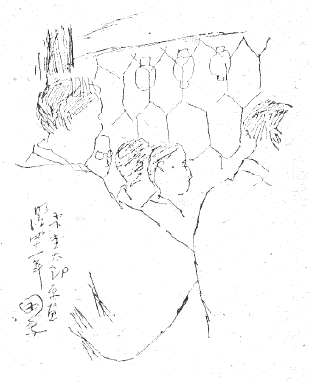

| 立見の金網について | |
| 木村 荘八 | |
| (2012) | |
立見の金網について
木村荘八

Ⅸ立見の金網
図は「木下杢太郎」こと太田正雄氏の写生画を借りるものであるが（小生模写）、遺憾のことには画中に日附もなければ、場所のかき入れもない。写生の日附は恐らく明治四十年見当であらうし、場所は市村座か新富座か、多分新富座であらう。いふまでもなく立見場の即写であるが、今僕にとつてこの絵の一番の重要性は、この絵に写してある、金網の目の大きさ
である。これもいふまでもなく、当時の芝居の立見場、一幕見には、大入場――そこからが芝居小屋の場内となる――との境界に、一面に金網が張つてあつたもので、それがいつか立見の人々に押されて帆のやうに大きく半弧を描いて遠く舞台を目がけて脹らんでゐたのは、奇観だつた。この絵の金網は脹らみを持つてゐないやうだが......必ず何処も脹らんでゐたといふわけではなし、金網の張り代へといふこともあらうから、それはこれで良い。
思ふに杢太郎氏の写生画は、その明暗の調子やパースペクチブなどにいはゆる「素人風な」間違ひをやつてゐることはあつても、形ち
はいつも略正確である。その点の「眼」は良い人であつた。この絵の金網の目大きさも、決していいかげんに素描した一コマ一コマではないと思ふ。相当正しく、この辺の大きさ
だつたものと信用が出来るわけである。人の首が自由に出入出来る程の大きさの一コマづつだと見て良いやうである。
僕の目のおぼえによれば、これより細か目の金網のところもあつたと思ふ。これより更に大き目？といふのは多分無かつたことと思ふけれども、――それが、相当太い、しつかりした針金でからげてあるのである。その針金の色が、下の部分は一体に、それに触る人々の手あかやあぶらによつて、ぬるりと光つて、黒ずんでゐたのも異色のものだつた。
くどくいふがこの金網の目の大きさ、――その文献ともいふか、おぼえともいふか、その辺のことが伝はらないものである。一幕見の立見に金網の張つてあつたことは相当いつまでも記憶され、伝へられても、さればどんなものがどの位の見当に張つてあつたか、といふことは、逸失され易い。湮滅しやすいのである。僕思ふに恐らくこの杢太郎の写生画の他にはほとんど
このドキュマンは、無いだらう。写真もこれは写されてゐまいと思ふ。
これは例へば劇場の新富座にしても、あの渋く、いきで、清楚だつた建物。小田原の本家「ういらう」と似た味だつた。白と黒の建物も、その正面図
を、偲ばうならば、今でも相当その写真なり写生画は残つてゐるから、ざつとわかるけれども、側面に至つて手がかりとなるものも少なく、背面は、全然、どうなつてゐたか、今からではわからない。
一体ひと
にしてもさうである。エライ人の肖像なども、正面向きの像には先づ事欠かないと思ふが、側面、背面は、残りにくい。故人を写したパテー・ベビーでもあれば格別のこと――その服装もよそ行きのなり
は、これを偲ぶ手がかりが多からうとも、常住坐臥、始終うちでどんななり
をしてゐたか、といふやうな点は、記憶も文献も、湮滅しやすい。
ひとの生活のよそ行き
以外の事柄は湮滅し易いに拘らず、例へば福地桜痴居士は、始終膝の上で両手に金時計を弄んでその蓋を開けたり閉めたり、パチパチいはせてゐるのが癖だつたといふ、――かういふことがら
は、存外生き生きとしたもので、桜痴居士は一頃全盛を極めて、池の端の御前といはれたといふ表向きのことよりも、始終その膝の上で金時計がパチパチしたといふ話の方が、余つ程面白く、その「ひと」を偲ばせる。
立見場の金網の目が何よりも立見場を偲ばせる......、といふ意味でいふのではないが、湮滅して了ふ「人」のことより「生活」の片々に実は面白いことは沢山ある、「面白さ」はその方がよそゆき や人の正面向き写真よりも上ではないか、といふことは、思ふわけである。
底本：「東京の風俗」冨山房百科文庫、冨山房
１９７８（昭和53
）年3
月29
日第1
刷発行
１９８９（平成元）年8
月12
日第2
刷発行
底本の親本：「東京の風俗」毎日新聞社
１９４９（昭和24
）年2
月20
日発行
※図版は、底本の親本からとりました。
入力：門田裕志
校正：伊藤時也
２００９年1
月6
日作成
２０１２年5
月16
日修正
青空文庫作成ファイル：
このファイルは、インターネットの図書館、青空文庫（http://www.aozora.gr.jp/）で作られました。入力、校正、制作にあたったのは、ボランティアの皆さんです。